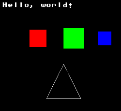
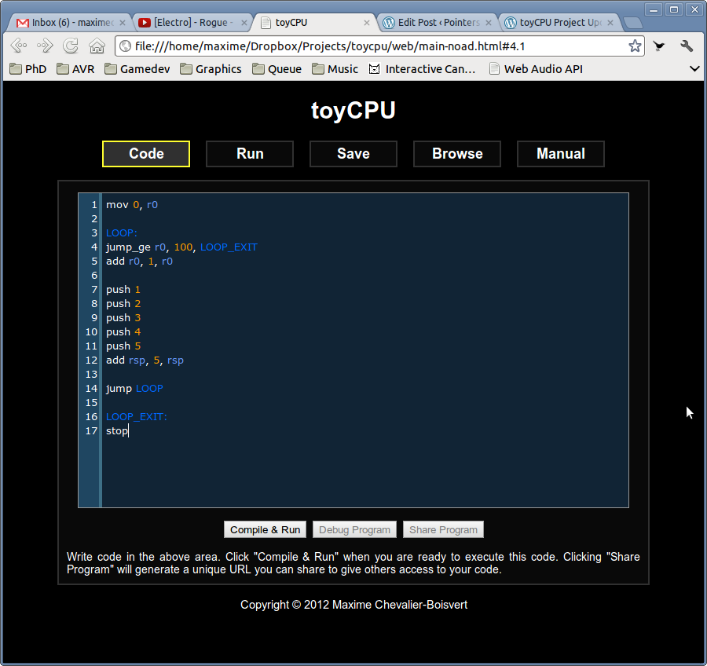
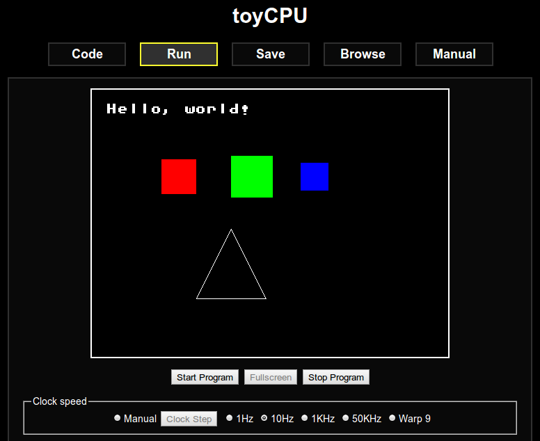
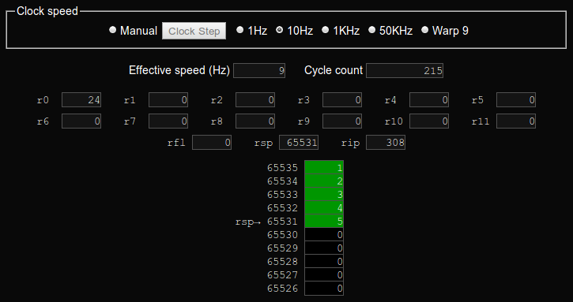
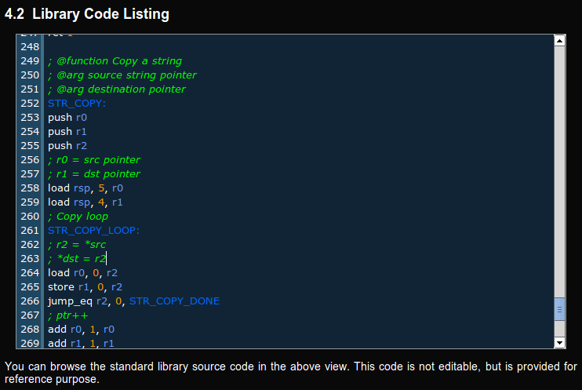

Motivated by the positive response I got, I've been working on toyCPU (my assembly teaching platform) quite intensely in the last few days. The core design of the system is mostly finished and I have a basic implementation working, able to compile and run assembly programs, and produce graphical output.
I designed a simple RISC-y assembly language, which currently comprises 30 opcodes. There are 12 general-purpose registers (r0..r12) and 3 special-purpose registers (rsp, rip, flags), with one extra register reserved for future usage. All registers are 16-bit and all are usable by instructions that take register operands. You may assign or add to the instruction pointer, for example. Instructions can also take 16-bit constants as input operands. The system RAM is made of 64K 16-bit words. This makes it very easy to address memory or visualize the memory space (no alignment issues).

There is a display adapter peripheral which is interfaced through a system bus. The display adapter has a 512x384 frame buffer with double-buffering, and an off-display 512x512 sprite buffer, which you may draw into or copy data from. On initialization, the first 16 rows of the sprite memory contain bitmap font data. Convenient library functions are provided to do things like draw points, lines, squares and sprites. Colors are specified in a convenient 16-bit RGBA format (i.e.: roses are 0xF00F, violets are 0x00FF).

Special features are included for teaching and debugging purposes. The clock speed can be capped as low as 1Hz, or even set to allow manual stepping. The contents of the registers and the top of the stack are also displayed in real-time. This makes it easy to see what's happening as each individual instruction is executed. I plan to eventually display the code corresponding to the current instruction and a (possibly editable) real-time visualization of the RAM as well.

I started work on a reference manual for toyCPU. The manual contains an automatically-generated instruction listing and allows you to browse the standard library source code. I'm thinking of implementing a doxygen-like system to automatically generate a listing of the library functions and their arguments in a format that's easy to navigate.

Overall, toyCPU is already fairly usable. In the near future, I plan to implement additional peripherals (keyboard input, system clock), add a RAM visualization system and beef up the standard library. This will make toyCPU complete enough to implement simple games, for example. There are still lots more features I'd like to add eventually, however, such as audio support, the possibility of saving programs online and a tracing JIT compiler.
I'm a little afraid of releasing toyCPU to the public too early. Because changes to the architecture could break previously written program, it's important that toyCPU be fairly complete and thoroughly tested. More test programs and unit tests will be needed. Again, if you're interested in contributing code or getting early access to toyCPU to help me beta test it, please let me know!
{kind=link}
{kind=link}
{kind=link}
{kind=link}